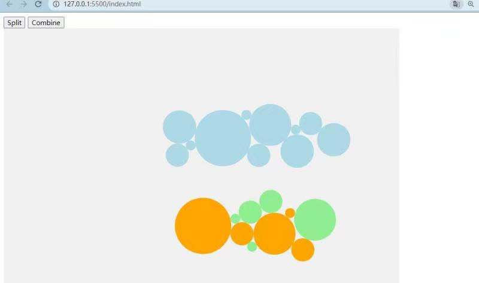
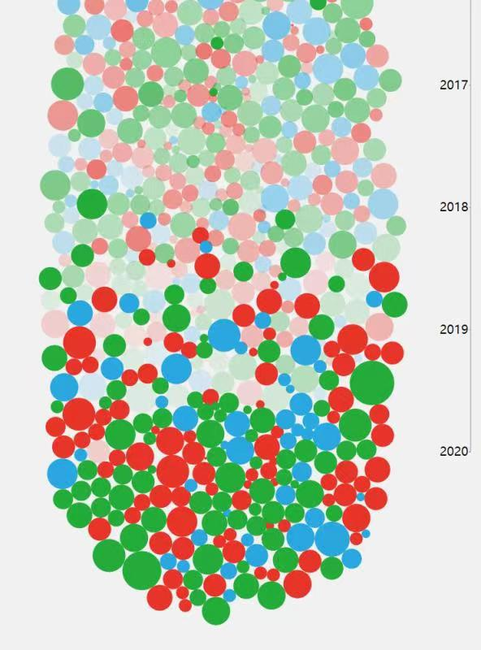
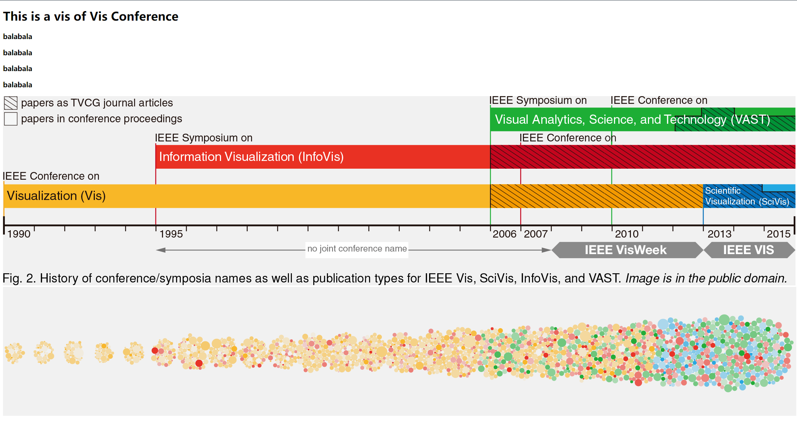
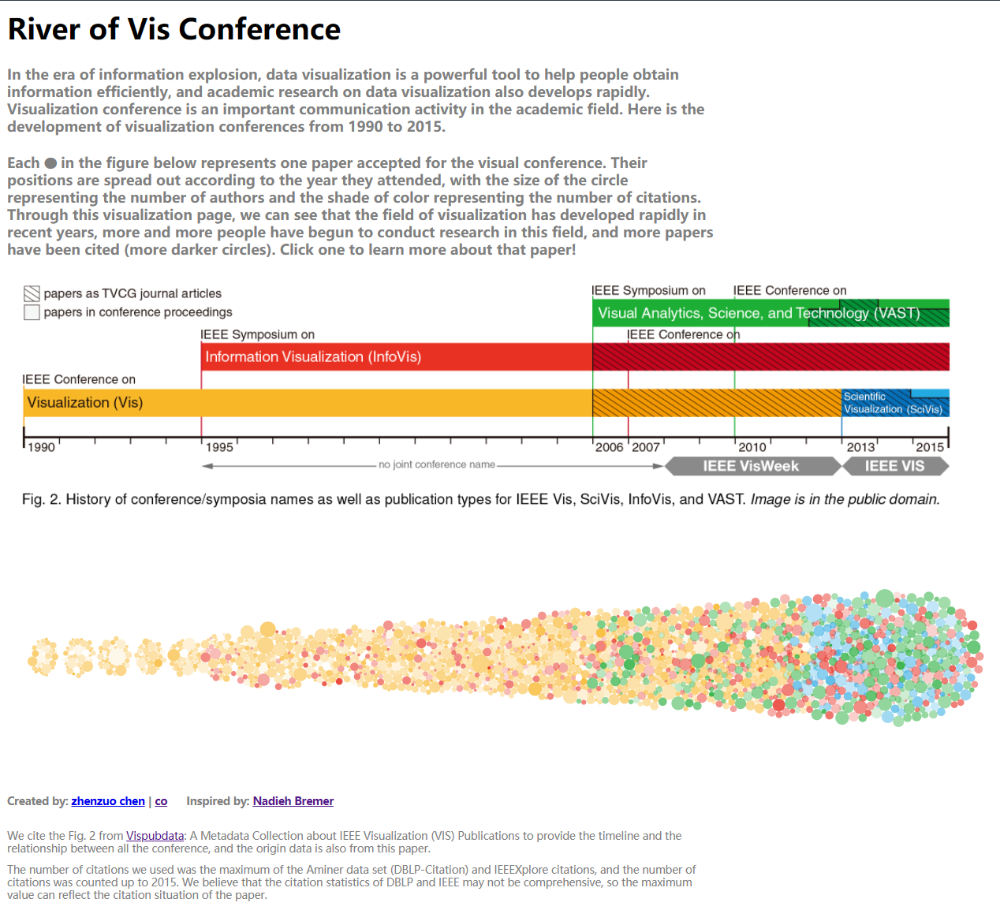

River of Vis Conference的诞生
先放上链接，感兴趣的朋友可以去看看~
组队做项目
数据集源于北大可视化发展前沿暑校的数据集之一：可视化会议数据
本来三人分工合作，想作为 audition group 进行展示，结果还是在前端实现的部分有所欠缺。不断降低预期效果不说，最终的成品也没能按时完成。
重拾项目与前端学习
暑校结束不久，就碰上了中国数据内容大赛。为了不让之前的努力不了了之，我和其中一名队友一拍即合，俩人决定再努努力，把没完成的部分补上，顺便投稿参赛。
我本身是几乎没有前端基础的，但 python 和 R 掌握得还不错，又稍微了解过一些html、css和JavaScript的概念，就照着之前那位前端队友没改完的代码开始边啃边改。途中还穿插着油管上的datavis教程来作为补充（课程笔记见主页右下角的笔记专区）。整个过程就像正弦函数，起起落落。从observable上找来的样例代码，原前端队友改成过程 1 的效果之后没有下文了……幸亏JS的语法和编程逻辑还比较好理解，前端的整体思路我也能在procreate画画的经历中找到熟悉感。所以几轮尝试下来，虽然代码写得毫不优美，明眼人一看就知道是东拼西凑的玩意，但好歹是在放弃的边缘疯狂试探，挫败感和自豪感来回拉扯的过程中，我，无情的调参机器，折腾出了一些还能看的东西。（见过程 2 ）


幸运的我又尝试出了把整个图形“横过来”的方法（见过程 3），此时的效果已经和终稿所差无几。
// 我尝试了一下把 cx 对应 d.y ; 同理，cy 对应 d.x
function ticked() {
circles
.attr("cx", function(d){
return d.y
})
.attr("cy", function(d){
return d.x
})
}
据不完全统计，我大概实现了几个核心部分：
- 颜色与时间轴上的会议分类相对应
- 颜色深浅与被引量成正比（由oppacity属性控制）
- 圆圈大小与共同作者数量成正比
- 鼠标滑过对应圆圈时，该圆圈会被高亮
- 点击对应圆圈会跳转到该文章的doi对应网页
- ......
最后加上了作品描述，微调了一下背景颜色、字体，作品的网页效果基本就完成了~

网页部署与参赛
作品完成之后很快遇到了新的大问题，这只是我的文件在本地用 vscode 开 live-server插件 看到的效果，我应该怎么把它部署到网页端，并提交链接参赛呢？不得不说是毫无头绪。查了一番资料之后，看到各种“域名备案”之类的教程，我都快把自己绕进去了……于是求助了一位前端朋友：站长，他说可以试试 vercel ，忽然想起，我的博客正是用 notion+vercel 搭的！虽然不清楚具体原理，但现在能够实现需求是第一要务！
折腾一番之后，居然就这么成功了！
为了首尾呼应，这里放上作品链接：https://datavis-conferences.vercel.app/
作品复盘
虽然这是我可视化路上的第一个作品，甚至可以说是一个草稿，但也确实自下而上学到不少，为之后脚踏实地学基础知识提供了一些实操的经验。遗憾的是，还是没法实现鼠标悬浮的tooltip（就能预览论文信息），等我多学点d3再来完善完善！
最后还是要感谢站长、古柳、队友suke提供的帮助！以及夸我的好朋友们~
2021/09